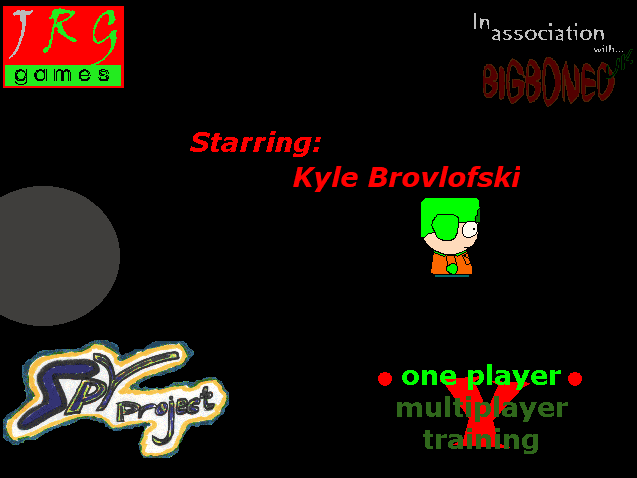
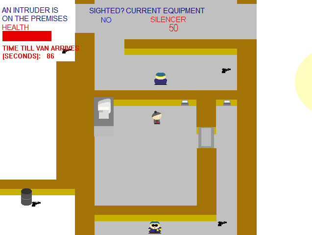
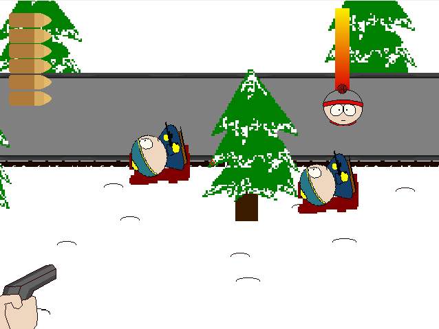
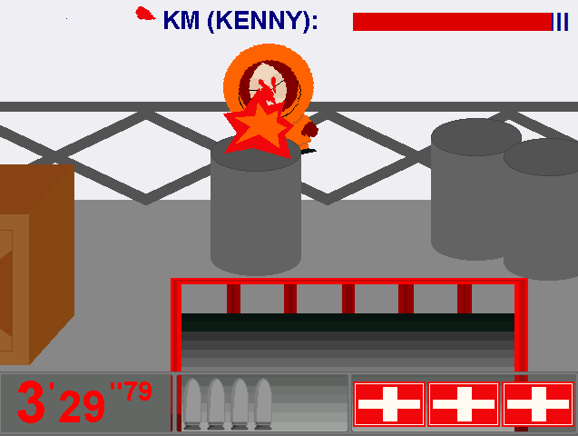

South Park Y
BigBonedUK
Despite some annoying bugs, South Park Y Project is a classic, innovative South Park Game, and inspired many more South Park Games after it. A combination of both a James Bond and Metal Gear Solid parody, SpY (as it's more commonly known) puts you in the shoes of the best spy in the business, Stan Marsh 0070. Under the watchful eye of Q and Y, you engage in a large number of missions, stealthily sneaking around various levels, with the opportunity to either avoid or kill guards. An advanced, clever game which also includes a multiplayer mode - can you help Stan stop international criminals before it's too late?
Downloads Direct Download - 2.6 MB Internet Archive Link2024 South Park Gaming